CRVI000035Lee Bannon - Fantastic Plastic
Artwork by Lazerus Pit · 2012
Artwork by Lazerus Pit · 2012

CRVI000266Roman Cieślewicz - J.M.K. Hellcat
Theatre Poster · 1979 · 1979
Theatre Poster · 1979 · 1979

CRVI000142Shin Matsunaga - [Poster: PLAY, black discs and an orange form]
Title not established
Title not established

CRVI000204Unknown - Roll Safe
Reaction GIF · Kayode Ewumi as Reece Simpson · 21 frames, 1.1s loop · 2016
Reaction GIF · Kayode Ewumi as Reece Simpson · 21 frames, 1.1s loop · 2016

CRVI000057B12 - Time Tourist
Designed by The Designers Republic, Trevor Webb · Warp Records · 1996
Designed by The Designers Republic, Trevor Webb · Warp Records · 1996

CRVI000226Unknown - Sanitation truck coffin
Ghanaian fantasy coffin · The Art Underground, Museum of International Folk Art, Santa Fe
Ghanaian fantasy coffin · The Art Underground, Museum of International Folk Art, Santa Fe

CRVI000062Reliq - Minority Report
Artwork by Tomokazu Matsuyama · Noble · 2011
Artwork by Tomokazu Matsuyama · Noble · 2011

CRVI000301Matt Baldwin - Night In The Triangle
Designer unknown · American Dust · 2011
Designer unknown · American Dust · 2011

CRVI000067Bourbonese Qualk - My Government Is My Soul
Designer unknown · Fünfundvierzig · 1989
Designer unknown · Fünfundvierzig · 1989

CRVI000279Wiktor Sadowski - Candide, or Optimism
Theatre Poster · 1986 · 1986
Theatre Poster · 1986 · 1986

CRVI000203Unknown - Popcorn
Reaction GIF · 60 frames, 6.0s loop
Reaction GIF · 60 frames, 6.0s loop

CRVI000293Jean-Jacques Perrey - Moog Indigo
Designer unknown · Vanguard · 1970
Designer unknown · Vanguard · 1970

CRVI000278Wiktor Sadowski - Art Center for Children and Youth
Event Poster · 1996 · 1996
Event Poster · 1996 · 1996

CRVI000228Us3 - Hand On The Torch
Designer unknown · Blue Note · 1993
Designer unknown · Blue Note · 1993

CRVI000128Koichi Sato - The 6th Iwaki Prefecture Art Festival
1982
1982

CRVI000012Foodman - Ez Minzoku
Artwork by Ellen Thomas, Keith Rankin · 2017
Artwork by Ellen Thomas, Keith Rankin · 2017

CRVI000069Cluster - Cluster Il
Designer unknown · Brain · 1972
Designer unknown · Brain · 1972

CRVI000289Ikko Tanaka - Faces
Poster
Poster

CRVI000034Teams - Dxys Xff
Artwork by Jónó Mí Ló · AMDISCS · 2011
Artwork by Jónó Mí Ló · AMDISCS · 2011

CRVI000254Jerzy Flisak - The Audience
Film Poster Designed By Jerzy Flisak · 1973 · 1973
Film Poster Designed By Jerzy Flisak · 1973 · 1973
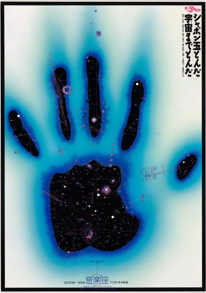
CRVI000129Koichi Sato - Soap Bubbles Floated, They Floated Into Outer Space
Produced by Human Design · Fuji Television
Produced by Human Design · Fuji Television
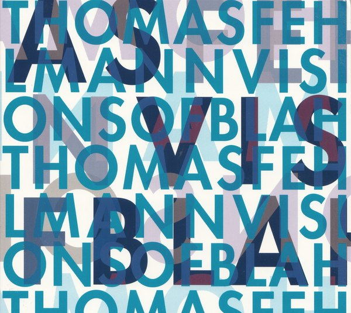
CRVI000003Thomas Fehlmann - Visions Of Blah
Designed by Bianca Strauch · Kompakt · 2002
Designed by Bianca Strauch · Kompakt · 2002
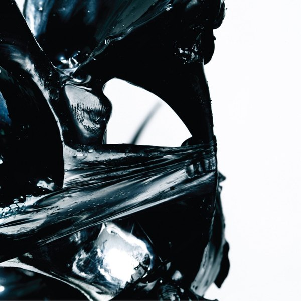
CRVI000010Flying Lotus - Los Angeles
Artwork by Commonwealth · Warp Records
Artwork by Commonwealth · Warp Records
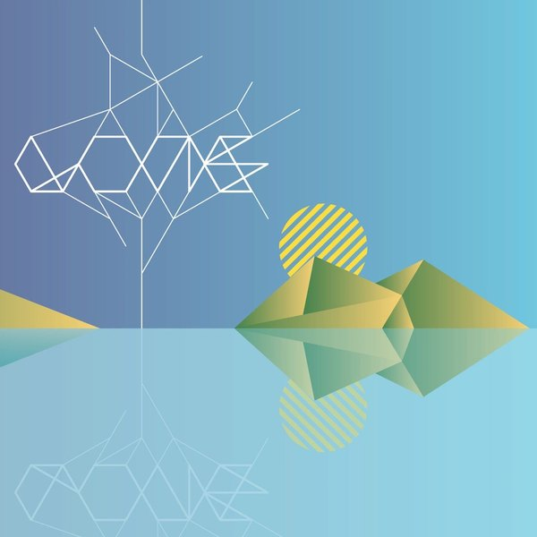
CRVI000325Lone - Ecstasy & Friends
Designer unknown · Werk Discs · 2009
Designer unknown · Werk Discs · 2009

CRVI000065Blank Banshee - Blank Banshee 0
Designer unknown · Hologram Bay · 2012
Designer unknown · Hologram Bay · 2012

CRVI000276Andrzej Pągowski - Polish Film Ltd.
Film Poster · 1989 · 1989
Film Poster · 1989 · 1989

CRVI000178Sonny Rollins - Sonny Rollins
Designed by Bob Weinstock · Prestige LP 7029 · 1953
Designed by Bob Weinstock · Prestige LP 7029 · 1953
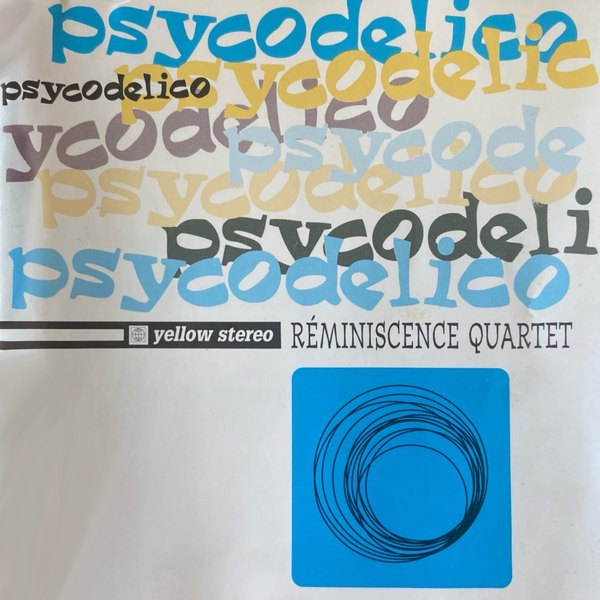
CRVI000231Reminiscence Quartet - Psycodelico
Designer unknown · Yellow Productions · 1995
Designer unknown · Yellow Productions · 1995

CRVI000183Dee Dee Sharp - Songs of Faith
Designer unknown · Cameo · 1962
Designer unknown · Cameo · 1962

CRVI000307Der Plan - Normalette Surprise
Designer unknown · Ata Tak · 1981
Designer unknown · Ata Tak · 1981
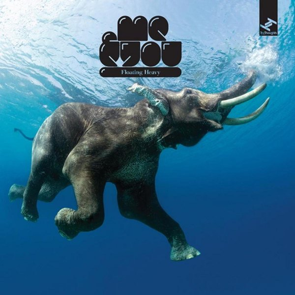
CRVI000230Me&You - Floating Heavy
Designer unknown · Tru Thoughts · 2007
Designer unknown · Tru Thoughts · 2007

CRVI000166Soft Machine - Seven
Designed by Roslav Szaybo · CBS 65799 · 1973
Designed by Roslav Szaybo · CBS 65799 · 1973
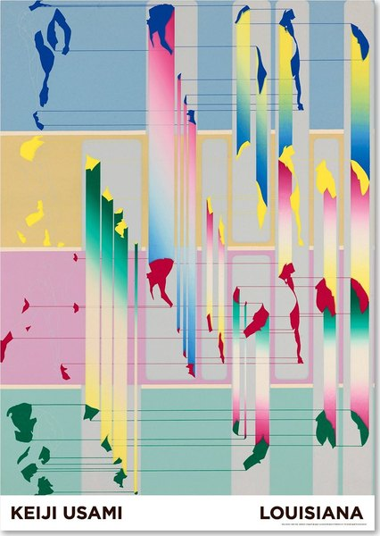
CRVI000246Keiji Usami - Louisiana exhibition poster
Exhibition poster · Louisiana Museum of Modern Art
Exhibition poster · Louisiana Museum of Modern Art

CRVI000133Tadanori Yokoo - JUN ROPÉ
Fashion advertising
Fashion advertising
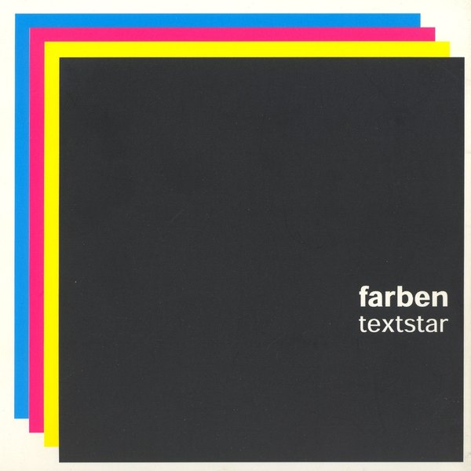
CRVI000317Farben - Textstar
Designer unknown · Klang Elektronik · 2002
Designer unknown · Klang Elektronik · 2002

CRVI000013Giant Claw - Dark Web
Artwork by Ellen Thomas, Keith Rankin · 2014
Artwork by Ellen Thomas, Keith Rankin · 2014

CRVI000089FUSE - Dimension Intrusion
Designer unknown · Plus 8 Records · 1993
Designer unknown · Plus 8 Records · 1993
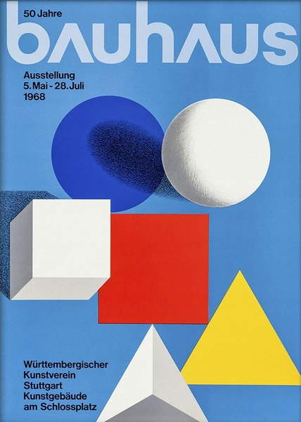
CRVI000286Herbert Bayer - Bauhaus Exhibition Poster - 50 Years of Bauhaus
Poster
Poster

CRVI000294Dick Hyman & Mary Mayo - Moon Gas
Designer unknown · MGM Records · 1963
Designer unknown · MGM Records · 1963
CRVI000212Unknown - Dance Break
Reaction GIF · Saturday Night Live · 58 frames, 4.6s loop
Reaction GIF · Saturday Night Live · 58 frames, 4.6s loop

CRVI000016Frank Coe, Forrest J. Ackerman - Music For Robots
Designed by Frank Coe · Science Fiction Records · 1961
Designed by Frank Coe · Science Fiction Records · 1961

CRVI000103Visible Cloaks - Reassemblage
Designed by Will Work For Good · Rvng Intl. · 2017
Designed by Will Work For Good · Rvng Intl. · 2017

CRVI000093Cabaret Voltaire - The Crackdown
Designer unknown · Virgin · 1983
Designer unknown · Virgin · 1983

CRVI000023NxxxxxS - Fujita Scale
Artwork by Ivan Peev · Headcount Records · 2014
Artwork by Ivan Peev · Headcount Records · 2014

CRVI000143Kenny Drew - This Is New
Designed by Paul Bacon · 1957
Designed by Paul Bacon · 1957

CRVI000024The Caretaker - An Empty Bliss Beyond This World
Artwork by Ivan Seal · History Always Favours The Winners · 2011
Artwork by Ivan Seal · History Always Favours The Winners · 2011
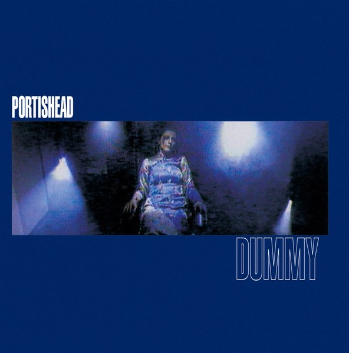
CRVI000234Portishead - Dummy
Designer unknown · Go! Beat · 1994
Designer unknown · Go! Beat · 1994

CRVI000090Michal Turtle - Phantoms Of Dreamland
Designer unknown · 2016
Designer unknown · 2016
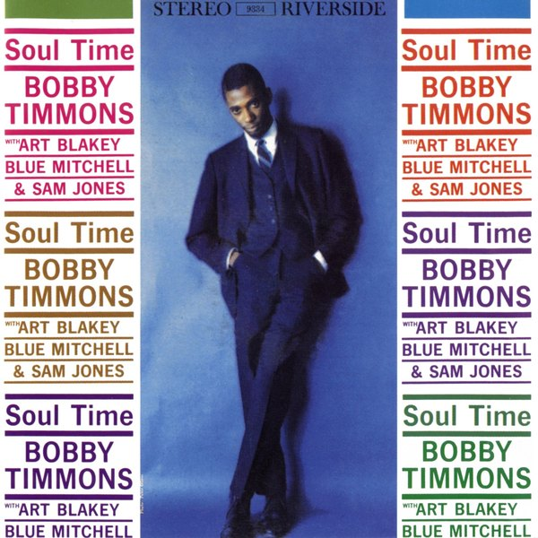
CRVI000146Bobby Timmons - Soul Time
Designed by Ken Deardoff · 1960
Designed by Ken Deardoff · 1960

CRVI000022Iannis Xenakis - Electro-Acoustic Music
Designed by Iannis Xenakis, Paula Bisacca · Nonesuch · 1970
Designed by Iannis Xenakis, Paula Bisacca · Nonesuch · 1970

CRVI000193Unknown - Dancing
Reaction GIF · 60 frames, 3.6s loop
Reaction GIF · 60 frames, 3.6s loop

CRVI000104Gábor Lázár - Crisis Of Representation
Artwork by Zsófia Boda · Shelter Press · 2017
Artwork by Zsófia Boda · Shelter Press · 2017

CRVI000180Tricky Lofton & Carmell Jones - Brass Bag
Designed by Woody Woodward · 1962
Designed by Woody Woodward · 1962

CRVI000005Rashad Becker - Traditional Music of Notional Species Vol. II
Artwork by Bill Kouligas · 2017
Artwork by Bill Kouligas · 2017

CRVI000091Nobukazu Takemura - Scope
Designer unknown · Thrill Jockey · 1999
Designer unknown · Thrill Jockey · 1999

CRVI000258Maciej Zbikowski - The Man Whose Price Rose
Film Poster Designed By Maciej Zbikowski · 1973 · 1973
Film Poster Designed By Maciej Zbikowski · 1973 · 1973

CRVI000163Kazumasa Nagai - World Design Expo '89 - Nagoya
Designed by Kazumasa Nagai · 1989
Designed by Kazumasa Nagai · 1989

CRVI000075H. Tical - Impact Synthesized Sound And Music
Designer unknown · Vedette Records · 1971
Designer unknown · Vedette Records · 1971

CRVI000054Autechre - Amber
Designed by The Designers Republic · Warp Records · 1994
Designed by The Designers Republic · Warp Records · 1994

CRVI000196Unknown - Hello
Reaction GIF · 40 frames, 2.8s loop
Reaction GIF · 40 frames, 2.8s loop

CRVI000068Randomize - ¿Cómo se divertirán los insectos?
Designer unknown · Grabaciones Accidentales · 1980
Designer unknown · Grabaciones Accidentales · 1980
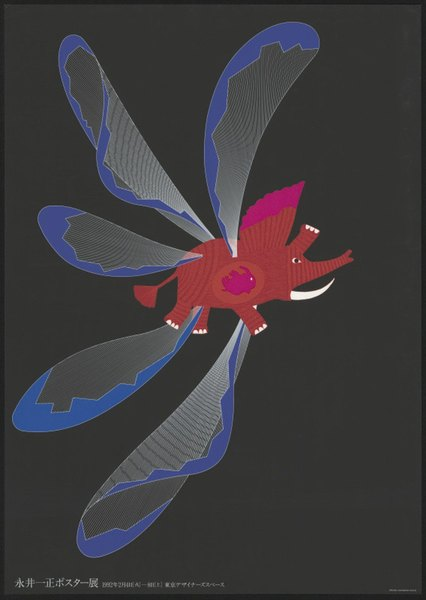
CRVI000160Kazumasa Nagai - Kazumasa Nagai Exhibition - Design Gallery
Designed by Kazumasa Nagai · 1991
Designed by Kazumasa Nagai · 1991

CRVI000014Bernard Bonnier - Casse‐tête
Designed by Eric Mattson · Amaryllis · 1984
Designed by Eric Mattson · Amaryllis · 1984